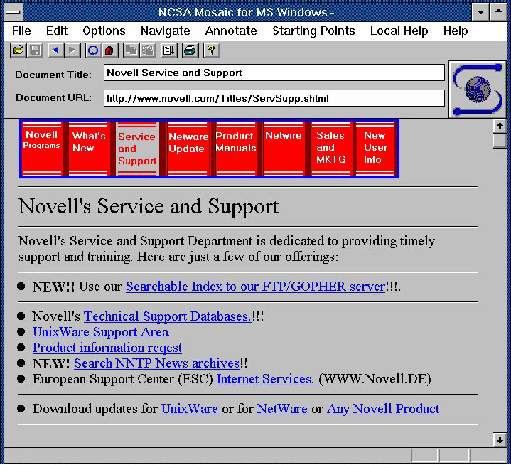
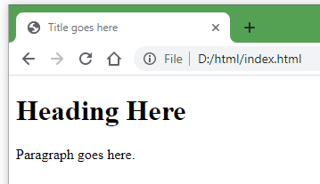

Lesson 2 Html Basics - Coding web pages from scratch
Terms: HTML, markup, element, tag, content, semantic HTML
Hypertext Markup Language (HTML) is one of three key languages used to code web pages. HTML gives the browser information about the content and what resources to download, e.g., images.
HTML is important for Web GIS because client applications like websites and some mobile apps use HTML pages to display web maps.
Early days
HTML is a standard format for web page documents first developed in the early 1990s. At the time, documents were exchanged on the Internet in various ways, mainly as plain text, but with the advent of HTML and graphical web browsers, documents evolved into multimedia web pages.

Figure 1. Part of the original thread where the HTML “img” tag was proposed to allow web page documents to include images. Source.

Figure 2. Screenshot of Mosaic, an early web browser and the first to become widely popular. Source: Nathan Zeldes.
Markup
Markup languages, like HTML, are written instructions for how a program, like a browser, should handle content. Markup languages are not considered programming languages, but can be described more broadly as computer languages. To understand markup, think of handwritten notes on plain text, describing how the text should look when printed and how the page should be structured.

Figure 3. Example of markup—handwritten instructions for preparing a document for print. Source: Mark Simonson.
Like handwritten markup, HTML similarly describes web page content to a browser. The code in HTML documents is plain text with special “tags” that describe the content. If your content is simply the word “Bold”, and you want the font to appear bold in a browser, you have to add markup to your HTML document. Tags and content together make up an HTML element.
 Figure 4. Tags and content together make up an HTML element. Source: Mozilla.
Figure 4. Tags and content together make up an HTML element. Source: Mozilla.
Here is an example of text content within HTML tags.
Source code:
<b>Bold</b>
Result:
Bold
The text “Bold” will be rendered in the browser as Bold because the browser interprets the HTML, <b> and </b>, and understands that any text between those two tags should be bold.
Tags
There are dozens of HTML tags. Here are just a few. Note that some have opening and closing tags that can enclose text or other tags (called nesting).
<h1> <h1>through<h6> </h6>Headings<p> </p>Paragraph of text<div> </div>A box that can help divide or structure a page<a> </a>Hyperlink (a is for anchor)<img>Displays an image file<br>Break to the next line<hr>Horizontal rule (line)<form> </form>Can contain checkboxes, textboxes, dropdowns, etc. for user input
Important syntax: HTML tags begin and end with angle brackets, < and >, and the closing tag has a forward slash / before the tag name.
Here is an example of a basic HTML document, with indentation to make it easier to read (for humans).
<!DOCTYPE html>
<html lang="en-us">
<head>
<title>Title goes here</title>
</head>
<body>
<h1>Heading Here</h1>
<p>Paragraph goes here.</p>
</body>
</html>
This would be rendered in a browser as:

Notice how the indentation works like an outline. Each element that is nested within (inside of) another element gets indented. Here, the indentation width is two spaces. Everything inside of the html tags is indented two spaces, such as the head tags. Then inside of the head tags we have title tags, so the title is indented two spaces relative to the head tag, but four spaces relative to the html tag.
The title, h1, and p elements are written on a single line in this example, but you may split elements up onto different lines (like head and body are) to make the code easier to read.
You can give it a try on CodePen, a sandbox for testing HTML, CSS, and JavaScript code. Paste the HTML above into the HTML area and see how it renders in the result area.
Here is a breakdown of the basic HTML skeleton presented above.
- The example begins with a tag
<!DOCTYPE html>that declares the type of document as HTML version 5 (written simply ashtml). This lets browsers understand how to interpret the code. - The opening
htmltag,<html lang="en-us">, begins the document. - The
headtag begins the part of the document giving metadata about the document. Here, only atitleis given. This appears in the tab of a browser and is used as the page title in search engine results. It should be descriptive of the page content but brief. - The opening
bodytag begins the part of the document where content should be added. This is the part of the page that will be displayed in the browser and should contain all text, images, etc. - The
h1andptags are just examples of tags that can describe content (e.g., headings and paragraphs). - The closing
bodytag signals the end of the part of the document displayed in the browser. Typically, nothing should come after the closingbodytag. - The closting
htmltag marks the end of the document.
Semantics
HTML gives semantic information about a web page’s content, meaning HTML describes the content’s purpose or significance. For example, take the <h1> tags from the previous example:
<h1>Heading Here</h1>
When a browser or a search engine reads a web page’s code and finds a heading tag <h1>, it assumes that the text within that tag is significant, probably describing the page’s topic. Therefore, HTML is not simply a way to format the appearance of content, but a way to describe how the content should be interpreted. HTML has many semantic tags, such as <main> to identify the page’s primary content, <nav> to identify navigation like a menu of links to other pages in the website, or <footer> to identify the bottom area of a web page where designers usually add a copyright, link to a privacy policy, and so on.
Semantic tags are useful for web page developers trying to understand code, but they are also useful for machines like search engine crawlers. Semantic markup helps machines understand what your web page is about, which in turn can help rank the page in search engine results, among other uses.
Another machine that depends on semantic HTML tags is a screen reader application for the visually impaired. When a text-to-speech screen reader encounters the <em> (emphasis) tag, for example, it can add inflection to its voice or otherwise indicate that the content should have emphasis:
HTML isn't <em>that</em> hard, is it?
As a best practice, HTML should mainly be used for semantics, and not for aesthetics. Controlling the look of a web page should be left to another language, CSS.
Summary
HTML code uses tags to describe content, so the browser can know how certain parts of the web page should look and act, especially when HTML is combined with CSS and JavaScript.
Other Learning Resources
- Codecademy - Introduction to HTML: Elements and Structure
- This is a long lesson but doing only the first few parts could still be helpful.
- Mozilla - HTML Basics